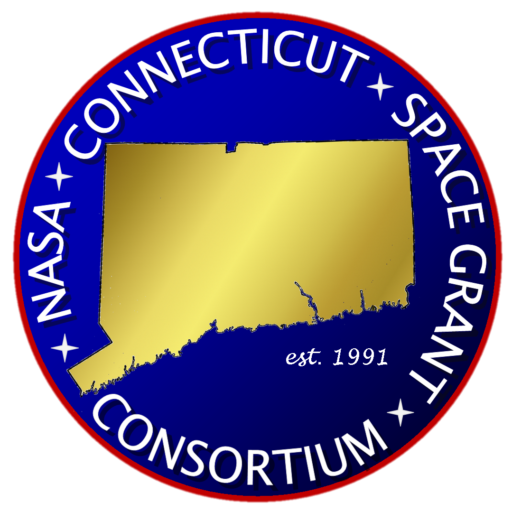

Cutler Awarded NASA CT Space Grant Undergraduate Research Fellowship

UConn undergraduate Sam Cutler was awarded an Undergraduate Research Fellowship from the NASA Connecticut Space Grant Consortium, through the Spring 2018 call for proposals. Sam’s research project, entitled “Examining High Redshift Rotation Curve Outside the Local Universe”, will consist of measuring the galactic rotation curve for a distant gravitationally-lensed massive, dusty star-forming galaxy. With this rotation curve, Sam plans to fit a dark matter density profile and determine the functional form of the profile. This research will be completed this summer at UConn in the Whitaker Research Group. Congratulations, Sam!